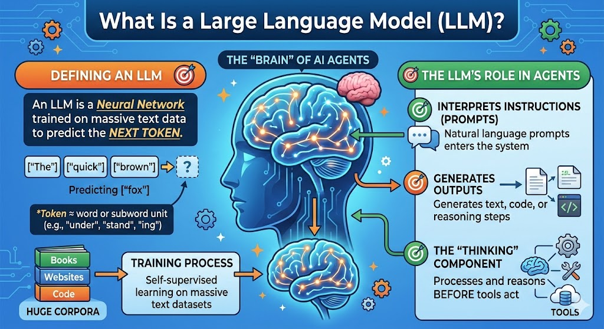
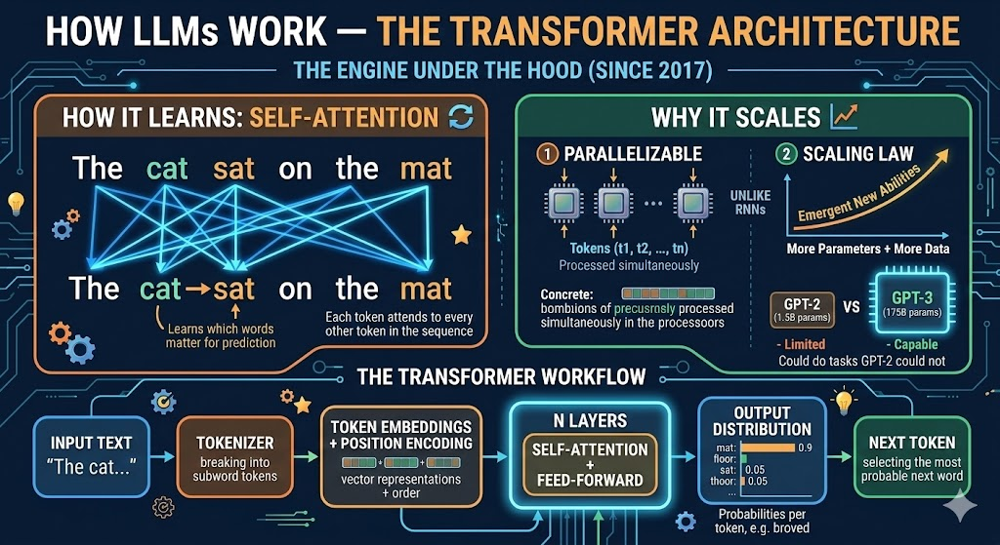
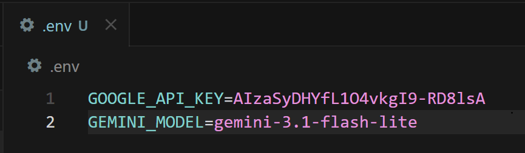

From "Tool User" to "Research Director" — The Brain of the Agent
Lecture, Practice, and Discussion for Week 2
The "brain" of most AI agents

The engine under the hood (since 2017)

Text in, numbers out — every character costs money
Input: "Understanding AI agents is essential"
Tokens: ["Under", "standing", " AI", " agents", " is", " essential"]
IDs: [16, 8714, 15592, 12875, 374, 7718]# Count tokens with tiktoken (OpenAI tokenizer)
import tiktoken
enc = tiktoken.encoding_for_model("gpt-4o")
tokens = enc.encode("Understanding AI agents is essential")
print(f"Token count: {len(tokens)}") # → 5-6 tokens
print(f"Tokens: {[enc.decode([t]) for t in tokens]}")Not all LLMs are equal — match the model to the task
| Model | Provider | Parameters | Context | Best For |
|---|---|---|---|---|
| GPT-4o / o3-mini | OpenAI | ~200B / MoE | 128K–200K | General reasoning, STEM, code generation |
| Claude 3.5 / 3.7 Sonnet | Anthropic | Undisclosed | 200K | Deep analysis, long documents, coding |
| Gemini 2.0 Flash / 2.5 Pro | Undisclosed | 1M–2M | Massive context, multimodal, speed (practice default) | |
| Llama 3.3 70B / 3.2 8B | Meta (open) | 70B / 8B | 128K | Local use, privacy, fine-tuning |
| DeepSeek-V3 / R1 | DeepSeek (open) | 671B (37B act.) | 64K–128K | Advanced math/reasoning, open-weights efficiency |
What makes LLMs suitable as the agent's brain
| Capability | What it means for agents |
|---|---|
| Instruction following | Understand natural language tasks (prompts) |
| In-context learning | Learn from few examples in the prompt (no retraining) |
| Reasoning (chain-of-thought) | Step-by-step reasoning for complex tasks |
| Code generation | Write and fix code → tool for automation |
| Structured output | JSON, tables → easy to plug into tools and APIs |
What these capabilities look like in practice
"Translate: cat → gato, dog → perro, house → ???" → "casa"{"author": "Smith", "year": 2024}Knowing the pitfalls is part of being a responsible director
When LLMs are confidently wrong
pip install ai-magic-toolkit)Concrete steps as a research director
.env + .gitignore)The most critical LLM security threat for agent builders
Capabilities, risks, and how to use them responsibly
References:
📚 Attention Is All You Need — Vaswani et al. 2017 📚 Scaling Laws — Kaplan et al. 2020 📚 Chain-of-Thought Prompting — Wei et al. 2022 📚 OWASP Top 10 for LLM ApplicationsAPI Connection & Setting up Ollama
Two ways to "talk" to LLMs from your code
What you will do in this week's hands-on
How to call a cloud LLM from your script
1. Get an API key from a provider (e.g. Google AI Studio — free tier available)
2. Store the key in an environment variable (never hardcode it!)
3. Visit Google Gemini Model Library (https://ai.google.dev/gemini-api/docs/models)
4. Find a proper model name and store the name also
3. Use a client library to send prompts and read responses
# .env file (add to .gitignore!)
GOOGLE_API_KEY=your_api_key_here
GEMINI_MODEL=gemini-3.1-flash-lite
pip install google-generativeai python-dotenv
📚 Google Gemini Model LibraryCall Google's LLM from your script
import os
from dotenv import load_dotenv
import google.generativeai as genai
# Load API key from .env
load_dotenv()
genai.configure(api_key=os.getenv("GOOGLE_API_KEY"))
# Create model and send a prompt
model = genai.GenerativeModel(os.getenv("GEMINI_MODEL"))
response = model.generate_content(
"Explain what a Transformer is in 3 sentences."
)
print(response.text)practices/week2/test_gemini.py (run it as-is after setting practices/.env).One client library, multiple providers
import os
from dotenv import load_dotenv
from openai import OpenAI
load_dotenv()
# Works with OpenAI, and also with Ollama (change base_url)
client = OpenAI(api_key=os.getenv("OPENAI_API_KEY"))
response = client.chat.completions.create(
model="gpt-4o-mini",
messages=[
{"role": "system", "content": "You are a helpful assistant."},
{"role": "user", "content": "What is a Transformer in AI?"}
]
)
print(response.choices[0].message.content)pip install openai python-dotenvRun LLMs on your own machine
1. Install: Download and install from [ollama.com](https://ollama.com) (Windows / macOS / Linux)
2. Pull a model: e.g. ollama pull qwen3.5:0.8b
3. Run: Ollama runs as a local server on port 11434
4. Use in code: Point your OpenAI client to http://localhost:11434/v1
ollama pull qwen3.5:0.8bEssential commands for local models
ollama list # List installed models
ollama pull qwen3.5:0.8b # Download a model (size depends on quantization)
ollama pull mistral # Another popular model (~4.1 GB)
ollama run qwen3.5:0.8b # Interactive chat in terminal
ollama serve # Start server (usually auto-starts)
ollama rm qwen3.5:0.8b # Remove a model to free disk spaceSame OpenAI client, different endpoint
from openai import OpenAI
# Point to local Ollama server (no API key needed!)
client = OpenAI(
base_url="http://localhost:11434/v1",
api_key="ollama" # required by client, but not checked
)
response = client.chat.completions.create(
model="qwen3.5:0.8b",
messages=[
{"role": "system", "content": "You are a helpful assistant."},
{"role": "user", "content": "What is a Transformer in AI?"}
]
)
print(response.choices[0].message.content)practices/week2/test_ollama.py.Choose the right tool for the job
| Criterion | Cloud API | Ollama (Local) |
|---|---|---|
| Response quality | State-of-the-art (GPT-4o, Claude, Gemini) | Good but smaller (8B-13B models) |
| Speed (latency) | Fast (optimized infra) but network dependent | Depends on your hardware (GPU helps) |
| Cost | Pay per token ($0.15-15 / 1M tokens) | Free after download |
| Privacy | Data sent to provider's servers | Data stays on your machine |
| Offline use | Requires internet | Works completely offline |
| Setup effort | Just an API key | Install + download models (4-40 GB) |
Switch between cloud and local with one config change
import os
from dotenv import load_dotenv
from openai import OpenAI
load_dotenv()
def create_client(backend="cloud"):
if backend == "ollama":
return OpenAI(base_url="http://localhost:11434/v1", api_key="ollama")
else:
return OpenAI(api_key=os.getenv("OPENAI_API_KEY"))
def chat(prompt, backend="cloud", model=None):
client = create_client(backend)
if model is None:
model = "qwen3.5:0.8b" if backend == "ollama" else "gpt-4o-mini"
response = client.chat.completions.create(
model=model,
messages=[{"role": "user", "content": prompt}]
)
return response.choices[0].message.content
# Usage
print(chat("Hello!", backend="cloud"))
print(chat("Hello!", backend="ollama"))Tick off each item after you complete it
practices/week2/test_gemini.py and confirm it prints a
responseqwen3.5:0.8bpractices/week2/test_ollama.py and confirm it prints a
responsechat() function that works with both backends
tiktokenWeek 1 Review & The "Stochastic Parrot" Problem
Three AI "agents" debated — you responded
Clear consensus on verification — with creative coalitions
Five powerful insights directly from your Week 1 discussion
A synthesis of your Week 1 principles
Does AI support mobility or lead to intellectual dependency?
Constant scrutiny vs. "The Efficient Middle"
Multiple students proposed new ways to frame the human-AI dynamic
Why verification intensity depends on domain consequences
What happens when AI-generated errors enter the scientific record?
Your Week 1 insights connect directly to the Stochastic Parrot debate
A critical perspective on what LLMs actually do
How do we even define understanding? Philosophy has debated this for decades
Both sides have compelling arguments
| Evidence | "Stochastic Parrot" (Imitation) | "Emergent Understanding" |
|---|---|---|
| Novel combinations | Recombines training data patterns | Generates code/solutions never seen in training |
| Reasoning | Pattern matching, not true logic | Chain-of-thought solves multi-step math correctly |
| Failures | Confidently wrong on simple logic puzzles | But humans also make systematic errors |
| Generalization | Fails on out-of-distribution tasks | Shows transfer learning to new domains |
| Grounding | No physical experience, no real "meaning" | Multimodal models (vision+language) show grounding |
If the agent's "brain" is a stochastic parrot, what are we directing?
Think about your own field
Linking Bender's theory directly back to your Week 1 positions
Post your response on the forum this week
1. Do you think current LLMs are more like "parrots" or like systems that "understand"? What would count as evidence for each?
2. Revisit your Week 1 position: now that you know about hallucination and prompt injection, would you adjust the boundary you defined between assistant and crutch?
3. Consider the Chinese Room argument: does it matter if an AI "truly understands" as long as the output is useful and correct for your research? Why or why not?
4. Design a concrete verification protocol for AI-assisted work in your specific research field. What gets checked? How? By whom?
Key Papers
📚 Attention Is All You Need — Vaswani et al. 2017 📚 On the Dangers of Stochastic Parrots — Bender et al. 2021 📚 Chain-of-Thought Prompting — Wei et al. 2022 📚 Scaling Laws for Neural Language Models — Kaplan et al. 2020 📚 OWASP Top 10 for LLM Applications
Tutorials & Tools
📚 Google AI Studio — Free API Key 📚 Ollama — Local LLM Runner 📚 OpenAI Python SDK 📚 tiktoken — Token Counter
Videos (Highly Recommended)
📚 But what is a GPT? — 3Blue1Brown (YouTube) 📚 Let's build GPT from scratch — Andrej Karpathy (YouTube)Three things to remember
Next week: Structured directing via prompt engineering — system prompts, personas, and few-shot techniques to get better results from LLMs.